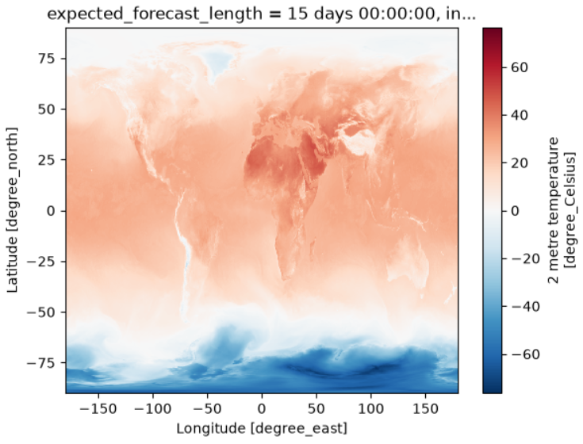
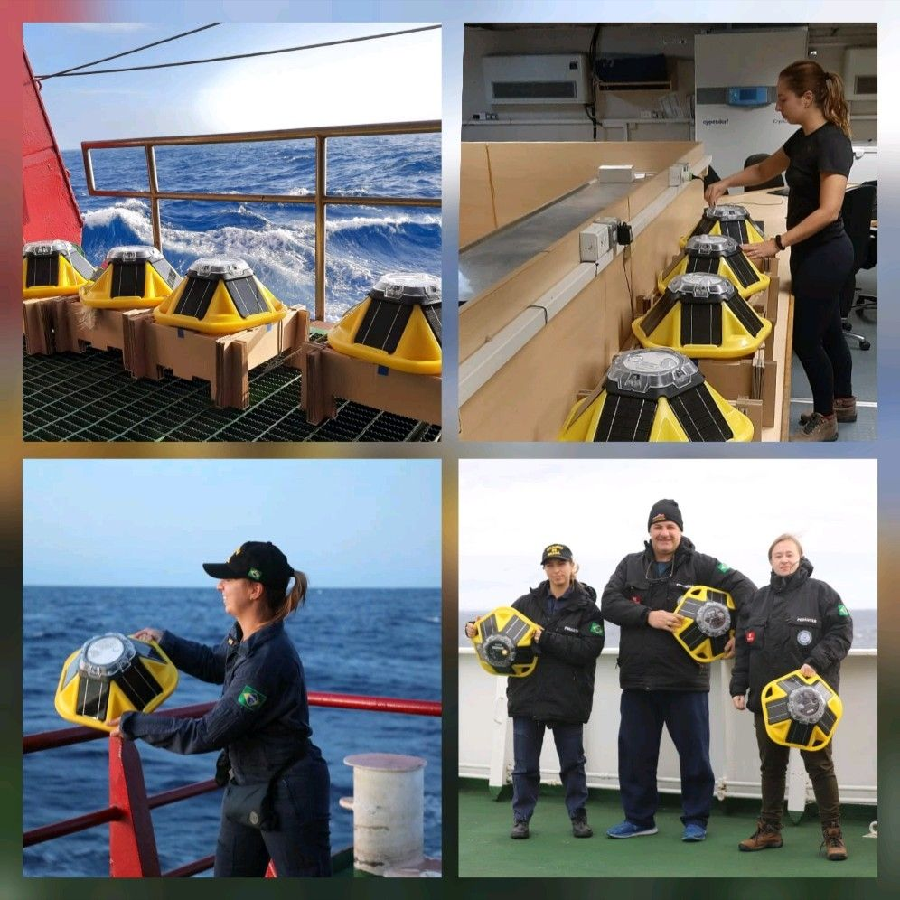
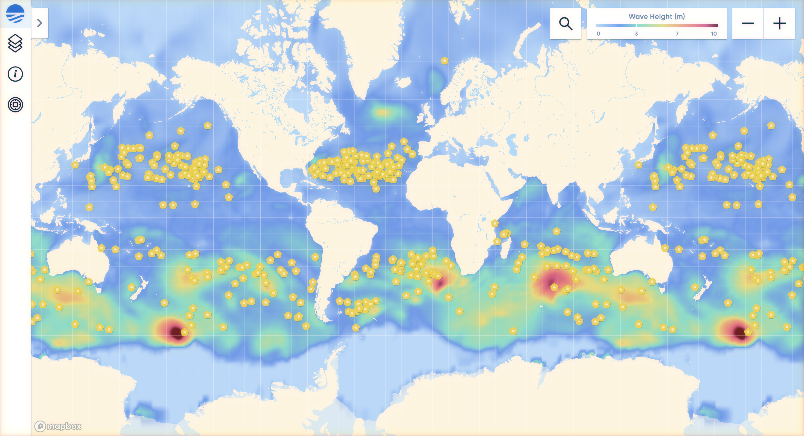
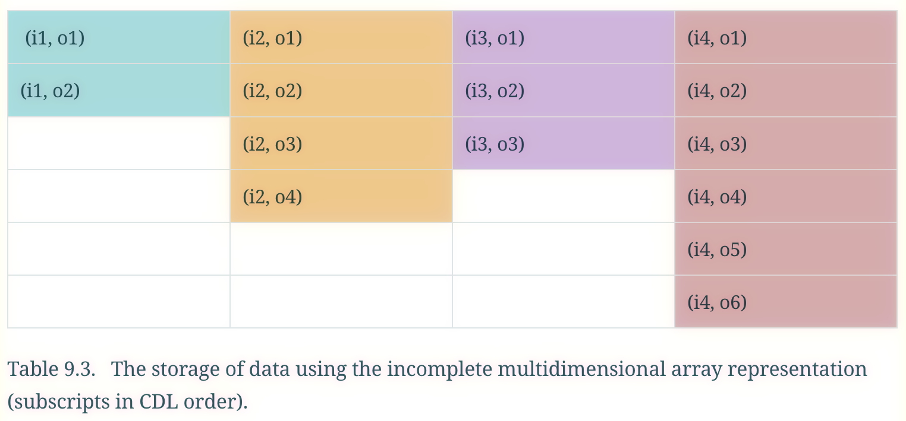
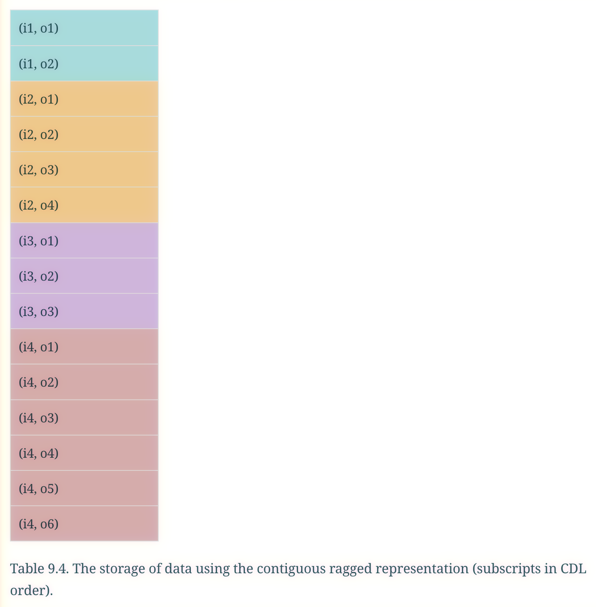
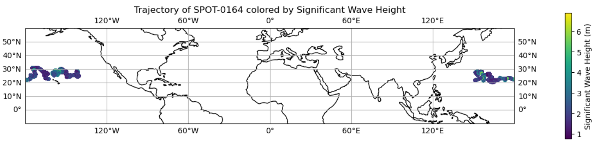

Hands-On with Open Zarr Datasets Using Python
Last updated on 2026-08-03 | Edit this page
Overview
Questions
- “Which publicly available Zarr datasets can I use for experimentation and learning?”
- “How do I open Zarr datasets from cloud object storage (Google Cloud, AWS S3) with Python?”
- “How do irregular grids, ragged arrays, and ensembles appear in Zarr + xarray?”
- “How do chunks and storage layout influence how I analyse these datasets?”
Objectives
- “Discover several open Zarr datasets for oceanography, climate, and meteorology.”
- “Use Python tools (xarray, zarr, fsspec) to open and explore Zarr datasets hosted in the cloud.”
- “Inspect dimensions, coordinates, and chunk layouts in real-world Zarr stores.”
- “Practice basic analysis and think about how chunking and storage affect performance.”
Overview: a tour of open Zarr datasets
In this lesson, we work hands‑on with several open Zarr datasets:
- IFS ensemble forecasts in Icechunk/Zarr from dynamical.org - global ensemble forecasts on AWS (I will explain later what Icechunk is and how it relates to Zarr).
- ERA5 ARCO reanalysis in Zarr on Climate Data Store - global atmospheric data ready for analysis.
- Sofar Spotter drifters - global Spotter wave drifter buoys from 2019-2023 stored as ragged array in Zarr.
- Additional examples such as CMIP6, CarbonPlan datasets, Earthmover Marketplace and NEMO Near-Present-Day, depending on your interests.
Each dataset illustrates different aspects:
- Regular latitude-longitude grids.
- Ragged arrays (varying-length trajectories).
- Non-regular or irregular grids.
- Ensembles with
memberdimensions.
All these datasets are hosted in cloud object storage (Google Cloud,
AWS S3, or HTTPS) and can be accessed programmatically with Python tools
like xarray and zarr. I will explain later
what object storage is and how it differs from traditional file
systems.
These datasets can be several terabytes in size. DO NOT DOWNLOAD THEM LOCALLY.
Ensemble forecasts - ECMWF AIFS ENS Icechunk/Zarr
Dynamical.org hosts ECMWF AIFS single and ensemble forecasts (ENS) in
Icechunk/Zarr format on AWS S3. It is possible to access the data using
the dynamical.org API or directly via the S3 url.
For example, the ECMWF AIFS SINGLE are accessible this way:
PYTHON
import xarray as xr
ds = xr.open_zarr("https://data.dynamical.org/ecmwf/aifs-single/forecast/latest.zarr")
dsYou can see as output that the dataset is large (14TB) and has
dimensions for init_time, lead_time,
latitude, and longitude. The data variables
include various meteorological fields such as temperature, wind, and
cloud cover.
If we inspect temperature_2m, we see that it represents hundreds of gigabytes of data:
Let’s try and read it by slicing out a small part of the file. We will slice out the last initialisation time, and get all the lead_times and latitude and longitudes related to it:
Now: - init_time is reduced to 1 - the selected time corresponds to the most recent model run (yesterday or today depending on the time of day)
This subset is much smaller, but no data has been loaded yet. If we explore further and print the temperature_2m array we’ll see that it is actually using a Dask array underneath.
To convert this into a standard Xarray DataArray we can call
.compute() on the temperature_2m. Note that only now will
the data be loaded into memory. This is a good example of lazy loading,
where the data is not actually read until we explicitly ask for it.
We can now plot this by selecting the data for the first lead time and then plotting it (we also need to select the first initialisation time since we only have one):

Or access some of the data:
OUTPUT
array(0.15820312, dtype=float32)If you want to slice the data by the latitude and longitude
coordinates you can use sel instead of
isel:
PYTHON
temperature_2m_slice = ds['temperature_2m'].sel(latitude=slice(50, 60), longitude=slice(-10, 0))
temperature_2m_sliceExploring more datasets and examples
If you want to have access to more datasets, you can explore the dynamical.org catalog for other ECMWF datasets in Icechunk/Zarr format. You can also find some examples of how to access and manipulate these datasets in the dynamical.org documentation.
Integrate cartopy for better visualisation
You can see below an example of the integration of cartopy to visualise the sea zonal wind at 10 meters above the surface from the ECMWF AIFS SINGLE dataset:
PYTHON
import xarray as xr
import matplotlib.pyplot as plt
import cartopy.crs as ccrs
import cartopy.feature as cfeature
ds = xr.open_zarr("https://data.dynamical.org/ecmwf/aifs-single/forecast/latest.zarr")
wind_u_10m = ds['wind_u_10m'].isel(init_time="2025-01-01",method="nearest").isel(lead_time=0)
plt.figure(figsize=(12, 6))
ax = plt.axes(projection=ccrs.PlateCarree())
# Add white land background
ax.add_feature(cfeature.LAND, facecolor='white', zorder=1)
ax.coastlines()
pcm = ax.pcolormesh(
wind_u_10m.longitude, wind_u_10m.latitude, wind_u_10m,
transform=ccrs.PlateCarree(),
cmap="viridis",
shading="auto",
zorder=0 # Ensure it overlays the land
)
plt.title("Sea Zonal Wind at 10 Meters Above the Surface")
plt.colorbar(pcm, label=wind_u_10m.attrs.get("units", ""))
plt.tight_layout()
plt.show()ERA5 ARCO - global reanalysis in Zarr
A subset of the ERA5 single-levels dataset is available in analysis-ready, cloud-optimised (ARCO) Zarr stores in the Copernicus Climate Data Store (CDS). The ARCO data is a repackaged version of the original ERA5 data. It allows direct programmatic access to a selection of the surface and wave variables (see below) without downloading individual files, enabling efficient and scalable data access and retrieval.
Create a CDS account and get an API key
Go to the Copernicus Climate Data Store and create an account.
After logging in, go to your API key page and copy your API key.
Access datasets
Set the cdsapi_key variable in the code below to your
API key. This will allow you to access the ERA5 ARCO Zarr datasets
hosted on the Copernicus Climate Data Store.
For this example, we will use the wave dataset from the ERA5 ARCO dataset, which includes variables such as significant wave height (swh), mean wave period (mwp), and mean wave direction (mwd). The dataset is available in two chunking layouts: geo-chunked and time-chunked.
PYTHON
# Geo-chunked wave data (optimised for time-series at a single location)
geochunked_wav_url = "https://arco.datastores.ecmwf.int/cadl-arco-geo-003/arco/reanalysis_era5_single_levels/wav/geoChunked.zarr"
# Time-chunked wave data (optimised for global map at a single time step)
timechunked_wav_url = "https://arco.datastores.ecmwf.int/cadl-arco-time-003/arco/reanalysis_era5_single_levels/wav/timeChunked.zarr"Let’s open the time-chunked dataset using xarray. Make sure to
replace <INSERT-CDS-API-KEY-HERE> with your actual
API key.
PYTHON
import xarray as xr
# Open the zarr store with xarray, users must insert their API key where indicated.
ds = xr.open_zarr(
timechunked_wav_url,
consolidated=True,
storage_options = {
"headers": {"Authorization": f"Bearer {cdsapi_key}"}
}
)
# Inspect the variables
print(ds)This is the output you should see:
OUTPUT
<xarray.Dataset> Size: 2TB
Dimensions: (time: 758352, latitude: 361, longitude: 720)
Coordinates:
* time (time) datetime64[ns] 6MB 1940-01-01 ... 2026-07-05T23:00:00
* latitude (latitude) float64 3kB -90.0 -89.5 -89.0 -88.5 ... 89.0 89.5 90.0
* longitude (longitude) float64 6kB -180.0 -179.5 -179.0 ... 179.0 179.5
Data variables:
mwd (time, latitude, longitude) float32 788GB dask.array<chunksize=(1, 361, 720), meta=np.ndarray>
mwp (time, latitude, longitude) float32 788GB dask.array<chunksize=(1, 361, 720), meta=np.ndarray>
swh (time, latitude, longitude) float32 788GB dask.array<chunksize=(1, 361, 720), meta=np.ndarray>
Attributes:
Conventions: CF-1.7
GRIB_centre: ecmf
GRIB_centreDescription: European Centre for Medium-Range Weather Forecasts
GRIB_edition: 1
GRIB_subCentre: 0
history: 2024-09-05T05:51 GRIB to CDM+CF via cfgrib-0.9.1...
institution: European Centre for Medium-Range Weather ForecastsFor a full list of available variables, see the ERA5 ARCO documentation.
Create a plot of a variable
You can see below an example of how to create a plot of the significant wave height (swh) variable at a single time step using matplotlib:
PYTHON
import matplotlib.pyplot as plt
# Select a variable (e.g. significant wave height)
swh = ds["swh"] # adjust to match the dataset variable names
# Select a single time step
one_time = swh.sel(time="2000-01-01T00:00:00")
# Plot the variable
plt.figure(figsize=(12, 6))
one_time.plot(cmap="coolwarm")
plt.title("ERA5 Significant Wave Height on 2000-01-01")
plt.xlabel("Longitude")
plt.ylabel("Latitude")
plt.show()You can also use the geo-chunked dataset to get a time series of a specific location and plot it. You can see an example below for the significant wave height (swh) variable at a specific latitude and longitude (Rio de Janeiro coast):
PYTHON
ds_geo = xr.open_zarr(
geochunked_wav_url,
consolidated=True,
storage_options = {
"headers": {"Authorization": f"Bearer {cdsapi_key}"}
}
)
swh = ds_geo["swh"]
# Select a specific location (e.g. Rio de Janeiro coast)
swh = swh.sel(latitude=-23.0, longitude=-43.0, method="nearest")
# Plot the time series
swh.plot()Additional resources
To see a full list of available datasets and examples, you can explore the Copernicus Climate Data Store and the ECMWF Training datasets repository.
Sofar Spotter drifters - ragged arrays
The Sofar Spotter Archive provides historical wave and inferred wind data from a global network of Spotter buoys, in both NetCDF and Zarr formats. A Spotter is a small, solar-powered drifter buoy that measures wave height, period, and direction, as well as GPS location. The Sofar Ocean company has deployed thousands of Spotters worldwide, and some of the data is made available for research and analysis.


First, let’s open the Zarr dataset from the Sofar Spotter Archive using xarray. The dataset is hosted on AWS S3 and can be accessed directly via its URL:
PYTHON
import xarray as xr
s3_uri = "https://sofar-spotter-archive.s3.amazonaws.com/spotter_data_bulk_zarr"
ds = xr.open_zarr(s3_uri)
dsOUTPUT
<xarray.Dataset> Size: 511MB
Dimensions: (index: 6390651, trajectory: 871)
Coordinates:
time (index) datetime64[ns] 51MB dask.array<chunksize=(99854,), meta=np.ndarray>
* trajectory (trajectory) object 7kB 'SPOT-010001' ... 'SPOT-1975'
Dimensions without coordinates: index
Data variables:
latitude (index) float64 51MB dask.array<chunksize=(99854,), meta=np.ndarray>
longitude (index) float64 51MB dask.array<chunksize=(99854,), meta=np.ndarray>
meanDirection (index) float64 51MB dask.array<chunksize=(99854,), meta=np.ndarray>
meanDirectionalSpread (index) float64 51MB dask.array<chunksize=(99854,), meta=np.ndarray>
meanPeriod (index) float64 51MB dask.array<chunksize=(99854,), meta=np.ndarray>
peakDirection (index) float64 51MB dask.array<chunksize=(99854,), meta=np.ndarray>
peakDirectionalSpread (index) float64 51MB dask.array<chunksize=(99854,), meta=np.ndarray>
peakPeriod (index) float64 51MB dask.array<chunksize=(99854,), meta=np.ndarray>
rowsize (trajectory) int64 7kB dask.array<chunksize=(871,), meta=np.ndarray>
significantWaveHeight (index) float64 51MB dask.array<chunksize=(99854,), meta=np.ndarray>
Attributes:
author: Isabel A. Houghton
creation_date: 2023-10-18 00:43:55.333537
email: isabel.houghton@sofarocean.com
institution: Sofar Ocean
references: https://content.sofarocean.com/hubfs/Spotter%20product%20...
source: Spotter wave buoy
title: Sofar Spotter Data Archive - Bulk Wave ParametersDataset structure
This dataset was designed to follow the conventions used by NOAA for a similar dataset: Global Drifter Program (GDP) Drifter data. The explanation below about this dataset was extracted and adapted from the OHW 2024 Tutorials - collocating_noaa_gfs_sofar_spotter_during_hurricane.
Each Spotter buoy records a different number of observations because of factors such as deployment time, reporting frequency, instrument lifetime, and missing measurements. One way to represent these observations is as an incomplete multidimensional array, where each column corresponds to a Spotter:

Although this representation is intuitive, it requires padding shorter time series with missing values. For large datasets, these unused values can occupy a substantial amount of storage. To avoid this overhead, the GDP and Sofar Spotter Archive use a contiguous ragged array representation:

In a contiguous ragged array, observations from all Spotters are stored sequentially in a single array. Additional index variables identify which observations belong to each Spotter, eliminating the need to store missing values while preserving the original trajectories.
Plot drift trajectory for individual drifter colored by date
Get the data for a single drifter:
PYTHON
# choose a drifter by ID
spotter_id = 'SPOT-0164'
# create array that points to indices for each trajectory
traj_idx = np.insert(np.cumsum(ds.rowsize.values), 0, 0)
# find index of chosen drifter
j = np.where(ds.trajectory==spotter_id)[0][0]
print(f"Drifter index for {spotter_id} is {j}")
# create the slice index `sli` for data from that drifter
sli = slice(traj_idx[j], traj_idx[j+1])Plot the trajectory colored by significant wave height (swh):
PYTHON
import matplotlib.pyplot as plt
import cartopy.crs as ccrs
import xarray as xr
fig, ax = plt.subplots(
figsize=(15, 10),
subplot_kw={"projection": ccrs.PlateCarree()},
)
ax.coastlines()
ax.gridlines(draw_labels=True)
ax.set_extent([110, 260, -10, 60], crs=ccrs.PlateCarree())
# Convert longitudes to the [0, 360] range
lons = ds.longitude[sli].compute()
lons[lons<0] += 360 # make sure lons span [0,360] for easier mapping
sc = ax.scatter(
lons,
ds.latitude[sli],
c=ds.significantWaveHeight[sli],
s=12,
cmap="viridis",
transform=ccrs.PlateCarree(),
)
plt.colorbar(
sc,
ax=ax,
label="Significant Wave Height (m)",
shrink=0.3,
pad=0.08,
)
ax.set_title(f"Trajectory of {spotter_id} colored by Significant Wave Height")
plt.show()
Exercise 1 - ECMWF AIFS SINGLE
Assuming you have opened an AIFS single dataset:
- Identify the dimensions and coordinates of the dataset
(e.g.
init_time,lead_time,latitude,longitude). - Choose a variable (e.g.
temperature_2mor similar, depending on the dataset’s naming). - Compute:
- A global mean time series over a limited period (e.g. one week).
- A spatial map at a single time step.
PYTHON
import xarray as xr
import numpy as np
# Open the AIFS single dataset
ds = xr.open_zarr("https://data.dynamical.org/ecmwf/aifs-single/forecast/latest.zarr")
# Inspect dimensions and coordinates
print(ds.dims)
print(ds.coords)
# Choose a variable
temp = ds["temperature_2m"] # adjust to match the dataset variable names
# Subset to one week (e.g. first week of the latest init_time)
temp_week = temp.isel(init_time=-1).sel(lead_time=slice(np.timedelta64(0, "D"), np.timedelta64(7, "D")))
# Global mean time series
global_ts = temp_week.mean(dim=("latitude", "longitude"))
print(global_ts)
# Map at a single time step (e.g. first lead_time of the week)
one_time = temp_week.isel(lead_time=0)
one_time.plot()Exercise 2 - Climate Data Store ERA5 inspection and simple analysis
- First, ensure you have your CDS API key set up as described above.
- Inspect the ERA5 dataset:
- Print
era5.dims,era5.data_vars, andera5.coords. - Identify at least 2 variables of interest (e.g.
mwp,swh).
- Print
- Select one variable (e.g.
mwpfor mean wave period) and subset it to a specific time range (e.g. one year). - Compute:
- A global mean time series over a limited period (e.g. one year).
- A spatial map at a single time step.
PYTHON
import xarray as xr
cdsapi_key = "<INSERT-CDS-API-KEY-HERE>"
# Open the ERA5 dataset
era5 = xr.open_zarr(
"https://arco.datastores.ecmwf.int/cadl-arco-time-003/arco/reanalysis_era5_single_levels/wav/timeChunked.zarr",
consolidated=True,
storage_options={"headers": {"Authorization": f"Bearer {cdsapi_key}"}}
)
# Inspect dimensions, data variables, and coordinates
print(era5.dims)
print(era5.data_vars)
print(era5.coords)
# Select a variable (e.g. mean wave period)
mwp = era5["mwp"] # adjust to match the dataset variable names
# Subset to a specific time range (e.g. one year)
mwp_year = mwp.sel(time=slice("2020-01-01", "2020-12-31"))
# Global mean time series
global_ts = mwp_year.mean(dim=("latitude", "longitude"))
print(global_ts)
# Spatial map at a single time step (e.g. first time step of the year)
one_time = mwp_year.isel(time=0)
one_time.plot()Exercise 3 - Working with ragged arrays
- Open the Sofar Spotter drifter dataset as shown above.
- Inspect
ds_spot:- Print
ds_spot.dims,ds_spot.coords, andds_spot.data_vars. - Identify the ragged structure: which dimensions represent trajectories, which represent sample indices?
- Print
- Choose one trajectory (e.g.
trajectory="SPOT-010001"or similar) and extract its time series: - Plot a time series of a variable of interest
(e.g.
significantWaveHeight) for that trajectory.
PYTHON
import xarray as xr
# Open the Sofar Spotter drifter dataset
s3_uri = "https://sofar-spotter-archive.s3.amazonaws.com/spotter_data_bulk_zarr"
ds_spot = xr.open_zarr(s3_uri)
# Inspect dimensions, coordinates, and data variables
print(ds_spot.dims)
print(ds_spot.coords)
print(ds_spot.data_vars)
# Identify the ragged structure
# 'trajectory' dimension represents different drifters, 'index' represents sample indices
# Choose one trajectory and extract its time series
spotter_id = "SPOT-010001"
traj_idx = np.insert(np.cumsum(ds_spot.rowsize.values), 0, 0)
j = np.where(ds_spot.trajectory == spotter_id)[0][0]
sli = slice(traj_idx[j], traj_idx[j + 1])
# Plot a time series of significant wave height for that trajectory
import matplotlib.pyplot as plt
plt.figure(figsize=(12, 6))
plt.plot(ds_spot.time[sli], ds_spot.significantWaveHeight[sli])
plt.title(f"Significant Wave Height for {spotter_id}")
plt.xlabel("Time")
plt.ylabel("Significant Wave Height (m)")
plt.grid()
plt.show()Other open Zarr datasets to explore
You can broaden the lesson with other open Zarr datasets:
- CMIP6 Zarr on AWS - global climate model output in Zarr format in the AWS open data.
- CarbonPlan Zarr datasets - downscaled climate and other datasets accessible via HTTPS-friendly Zarr URLs.
- Earthmover Marketplace - a collection of open geoscience datasets, some of which are available in Zarr format.
- NEMO Near-Present-Day - ocean model output in Zarr format, including near-present-day simulations.
Exercise 4 (Optional) - Build your own mini project
Choose one of the datasets (ERA5, Spotter, AIFS, CMIP6, NEMO, or another Zarr dataset you know) and design a mini project:
- Define a question you want to answer (e.g. “How has near‑surface temperature changed in a region over a given period?” or “What is the distribution of wave heights across the Spotter network?”).
- Write code to:
- Open the dataset with xarray and/or supporting libraries.
- Explore dimensions, variables, chunk strategy and metadata.
- Perform a small analysis or visualisation that addresses your question.
- Reflect on:
- How easy or difficult it was to access and manipulate the Zarr dataset.
- How chunks and storage affected performance and workflow.
- Any issues or surprises you encountered (e.g. irregular grids, ragged arrays, ensemble dimensions).
You can share your mini projects with the class or colleagues and discuss different approaches.
- “Many open Zarr datasets are available for oceanography, climate, and meteorology, including ERA5 ARCO, Sofar Spotter drifters, ECMWF IFS ensemble forecasts, CMIP6, and marine products.”
- “Python tools like xarray, zarr, and fsspec make it straightforward to open and explore Zarr datasets hosted on cloud object storage.”
- “Real-world Zarr datasets illustrate regular grids, ragged arrays, ensemble dimensions, and more, providing rich practice for accessing, analysing, and understanding chunked data.”
- “Working hands-on with open Zarr datasets helps learners build intuition about data structures, performance, and best practices for cloud-native scientific workflows.”